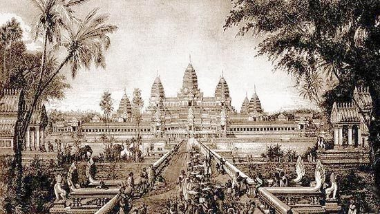
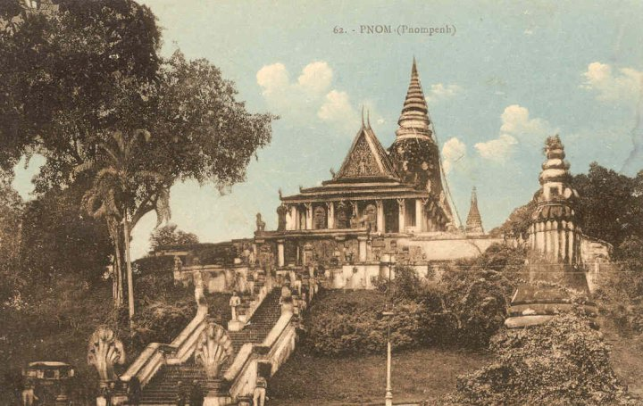

សម័យចតុមុខ (1432-1527)


- ព្រះបាទពញាយ៉ាត (1421-1431)
- ព្រះបាទពញាយ៉ាតបានសោយរាជ្យនៅក្រុងអង្គរ (1421-1431) ក៏លើករាជធានីមកទួលបាសានក្នុងខេត្តស្រីសឈរ (ស្រីសន្ធរ) នៅឆ្នាំ1431តែដោយសារស្ថានភាពមិនល្អ ទួលបាសានទឹកជន់លិចក៏រើរាជធានីពីស្រីសឈរ មកតាំងនៅចតុមុខមង្គល (ទន្លេច្រាបឈាម) វិញ។